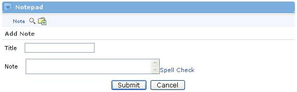
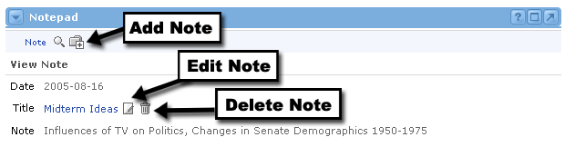
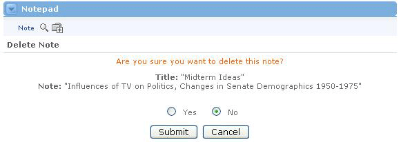

Adding a Note
To add a note, follow these steps:

Viewing a Note
To view a note, simply click the title of the Note or click the magnifying glass icon next to the title of the note you wish to view. The note text will appear, along with options to edit or delete the note.

Editing and Deleting Notes
If you would like to edit a note, simply click the Edit icon next to the note you want to update. You will then see the Edit Note screen. Here you can change the title and the note itself. Make sure to click the Submit button when your changes are complete.
To Delete a note, simply click the trash can icon next to the note. You will be asked to confirm that this is the note you want to delete. Select the Yes radio button and click the Submit button.

Sorting Notes
Once you have a list of notes, you may decide to change the way they're sorted.
To sort your notes by date, simply click the up or down arrows next to the Date link in the row above your notes. The Date Up Arrow will sort notes with the oldest note at the top. The Date Down Arrow will sort your notes with the newest note at the top.
To sort your notes alphabetically by title, click the up or down arrows next to the Date link in the row above your notes. The Title Up Arrow will sort notes in ascending order (from A to Z, top to bottom). The Title Down Arrow will sort your notes in descending order.